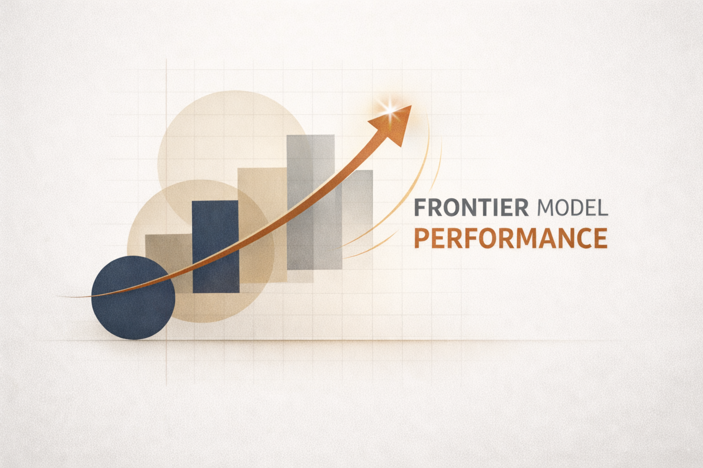

Benchmark Note #2
Frontier Model Performance on Grade-Level Accuracy
March 2026
Evaluation Framework: OurDojo Grade Level Appropriateness Evaluator

Context
Benchmark Note #1: Benchmarking Grade Level Accuracy Across AI Teacher Tools evaluated platforms purpose-built for teachers — MagicSchool and Twee — while the MagicSchool Case Study examined iterative improvement within a single platform. A natural follow-up question is how the underlying frontier models perform without those application wrappers: does the model itself reliably produce grade-appropriate content, or does performance depend heavily on which model is used?
This analysis presents 900 evaluations of AI-generated 3rd-grade educational content, spanning 100 unique passages produced by three frontier language models and assessed by three independent AI judges. The results reveal substantial variation in both generation quality and evaluation behavior.
Methodology
We apply the same evaluation methodology used in Benchmark Note #1: Benchmarking Grade Level Accuracy Across AI Teacher Tools and the MagicSchool Case Study. Specifically, the corpus comprises 100 expository passages targeting a 2nd–3rd grade reading band. Passages cover two subjects: Science (40 passages across 4 categories) and Social Studies (60 passages across 4 categories) — reflecting the emphasis typical of elementary curricula.
| Dimension | Detail |
|---|---|
| Target grade band | 2–3 |
| Total passages | 100 |
| Science passages | 40 (Ecosystems & Interdependence, Forces & Interactions, Life Cycles & Traits, Weather & Climate) |
| Social Studies passages | 60 (Civics & Economics, Communities, Geography, History & Culture) |
| Text type | Expository, single paragraph |
Evaluation Matrix
Each passage was generated independently by Claude 4.6 Opus, Gemini 2.5 Pro, and GPT-5.1, yielding 300 generated texts. Each text was then evaluated by all three models acting as judges, producing a full 3×3 matrix of 900 evaluations.
Judges assessed each passage on multiple dimensions: quantitative readability metrics (Flesch-Kincaid grade level), text structure complexity, language and vocabulary demands, and background knowledge requirements. Each evaluation produced a binary in-target-grade determination alongside detailed qualitative reasoning.
Generator Performance
The most striking finding is the 38-percentage-point gap between the best and worst generator. Gemini 2.5 Pro achieved near-perfect grade-level accuracy at 98.7%, while Claude 4.6 Opus landed at 60.7%, which is a gap large enough to meaningfully affect classroom outcomes.
| Generator | Claude Judge | Gemini Judge | GPT-5.1 Judge | Average |
|---|---|---|---|---|
| Gemini 2.5 Pro | 100.0% | 100.0% | 96.0% | 98.7% |
| GPT-5.1 | 81.0% | 86.0% | 62.0% | 76.3% |
| Claude 4.6 Opus | 68.0% | 75.0% | 39.0% | 60.7% |
Every single failure across all 900 evaluations was categorized as “Too Hard”. No passage was ever judged too easy. Moreover, all 193 failed passages still fell within the alternative-or-target grade band (K–3), meaning failures represent content that is above grade level but not wildly so. The challenge is typically elevated vocabulary or complex sentence structure, not fundamentally misaligned content.
Judge Behavior and Agreement
Judge Severity
Judges varied substantially in how strictly they applied grade-level standards, with a 21.3-percentage-point spread between the most lenient and most strict.
| Judge | Pass Rate (across all generators) | Characterization |
|---|---|---|
| Gemini 2.5 Pro | 87.0% (261/300) | Most lenient |
| Claude 4.6 Opus | 83.0% (249/300) | Moderate |
| GPT-5.1 | 65.7% (197/300) | Strictest |
GPT-5.1 applied notably higher standards, failing more than a third of all content it reviewed. This severity was consistent across generators: GPT-5.1 gave the lowest pass rate to every generator’s content.
Judge Agreement
When all three judges evaluated the same content, agreement patterns varied dramatically by generator.
| Generator Content | Unanimous Pass | Unanimous Fail | Split Decision |
|---|---|---|---|
| Gemini 2.5 Pro | 96% | 0% | 4% |
| GPT-5.1 | 58% | 8% | 34% |
| Claude 4.6 Opus | 37% | 20% | 43% |
Gemini’s content achieved near-total consensus with 96% of passages approved by all three judges. Claude’s content, by contrast, produced a unanimous pass on only 37% of passages, with 43% triggering split decisions where judges disagreed. This suggests that lower-performing generators produce content that sits closer to the grade-level boundary, where reasonable evaluators can disagree.
Self-Evaluation Bias
A key question for any AI evaluation framework is whether models can reliably judge their own output. The answer is nuanced.
| Generator/Self-Judge | Self-Judge Rate | Other-Judge Rate | Delta |
|---|---|---|---|
| Claude 4.6 Opus | 68.0% | 57.0% | +11.0pp |
| Gemini 2.5 Pro | 100.0% | 98.0% | +2.0pp |
| GPT-5.1 | 62.0% | 83.5% | −21.5pp |
GPT-5.1 exhibits the most unexpected pattern: it is dramatically harder on its own content than other judges are, rating itself 21.5 percentage points lower. This anti-self bias is unusual and suggests GPT-5.1 applies a different evaluative lens when it recognizes its own output patterns. Claude shows a mild positive self-bias (+11pp), while Gemini’s near-perfect generation rate leaves little room for bias to manifest.
These results indicate that self-evaluation bias varies in both magnitude and direction, limiting the reliability of single-model evaluation pipelines.
Subject and Category Analysis
By Subject
Science content proved consistently harder to generate at grade level than Social Studies, regardless of generator.
| Subject | Claude 4.6 Opus | Gemini 2.5 Pro | GPT-5.1 | Overall |
|---|---|---|---|---|
| Science | 49.2% | 98.3% | 65.8% | 71.1% |
| Social Studies | 68.3% | 98.9% | 83.3% | 83.5% |
The 12.4-percentage-point overall gap between subjects reflects a fundamental challenge: science topics require technical vocabulary (e.g., “interdependence,” “evaporation,” “friction”) that is difficult to simplify without sacrificing accuracy. Social Studies topics more readily admit age-appropriate language.
By Category
Performance varied substantially across the eight topic categories.
| Rank | Category | Subject | Pass Rate |
|---|---|---|---|
| 1 | Communities | Social Studies | 94.1% (127/135) |
| 2 | Civics & Economics | Social Studies | 88.9% (120/135) |
| 3 | Life Cycles & Traits | Science | 80.0% (72/90) |
| 4 | History & Culture | Social Studies | 77.0% (104/135) |
| 5 | Weather & Climate | Science | 76.7% (69/90) |
| 6 | Geography | Social Studies | 74.1% (100/135) |
| 7 | Forces & Interactions | Science | 64.4% (58/90) |
| 8 | Ecosystems & Interdependence | Science | 63.3% (57/90) |
The bottom two categories, Forces & Interactions and Ecosystems & Interdependence, are both science topics where domain-specific terminology is particularly resistant to simplification. Communities, at the top, deals with familiar, concrete concepts that naturally lend themselves to age-appropriate expression.
Discussion
Four findings emerge from this analysis:
- Generator selection is a primary source of variance. The 38-percentage-point spread across generators represents the single largest source of performance variation in this study. This is consistent with emerging research documenting significant differences in LLMs’ ability to produce text at target readability levels (Huang et al., 2024; Farajidizaji et al., 2023).
- Judge severity is model-dependent. The 21-percentage-point spread in judge pass rates underscores that LLM-as-judge evaluations are not interchangeable. This aligns with the foundational work by Zheng et al. (2023), which documented position bias, verbosity bias, and self-enhancement bias across judge models. The magnitude of the spread observed here reinforces the case for multi-judge evaluation designs.
- Self-evaluation introduces systematic bias. Biases ranging from +11pp to −21.5pp confirm that self-evaluation is unreliable in both directions. Panickssery et al. (2024) showed that LLMs can distinguish their own outputs from others’ at non-trivial accuracy and that self-recognition ability correlates linearly with the strength of self-preference bias. Wataoka et al. (2024) introduced a quantitative metric for self-preference bias, identifying text perplexity as the underlying mechanism — models prefer text that is more familiar to their own distribution. These findings add to the growing evidence that self-evaluation introduces systematic bias into LLM evaluation pipelines.
- Domain-specific vocabulary creates a measurable accuracy gap. The 12.4pp gap between Science and Social Studies pass rates suggests that simplifying domain-specific vocabulary poses a distinct challenge compared to general text. Research on domain-specific text simplification confirms this pattern (Engelmann et al., 2023; Asthana et al., 2024).
Limitations
- Sample size. The corpus of 100 passages (900 total evaluations) is sufficient for detecting the large effects reported here but limits statistical power for category-level comparisons, particularly in categories with fewer passages.
- Grade band. All passages target the 2nd–3rd grade reading band. Results may not generalize to other grade levels, where readability thresholds and vocabulary expectations differ.
- Text type. The corpus consists exclusively of single-paragraph expository passages. Performance on other formats — multi-paragraph texts, narrative writing, instructional prompts — remains untested.
- Model versions. Results reflect specific model versions available at the time of evaluation (Claude 4.6 Opus, Gemini 2.5 Pro, GPT-5.1). Model capabilities change with updates, and these findings represent a point-in-time snapshot.
Data Availability
The OurDojo GLA Benchmark Dataset incorporates these evaluation results in their entirety. The 3×3 evaluation matrix provides nine independent assessments per passage, enabling analysis of inter-judge reliability and consensus thresholds. The dataset currently includes standardized evaluations of:
- Gemini (2026)
- Claude (2026)
- GPT (2026)
- MagicSchool (2026)
- Twee (2026)
Conclusion
This analysis of 900 evaluations documents substantial variation across multiple dimensions of grade-level content generation and evaluation. Generator choice accounts for a 38-percentage-point performance spread. Judge severity varies by 21 percentage points. Self-evaluation bias ranges from +11pp to −21.5pp. Science content lags Social Studies by 12.4 percentage points. Taken together, these magnitudes indicate that single-model generation and evaluation pipelines are unlikely to produce reliable grade-level accuracy assessments.